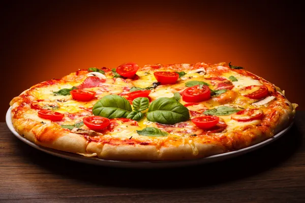
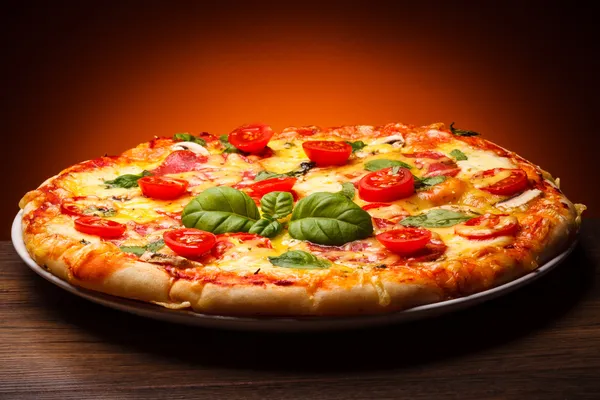
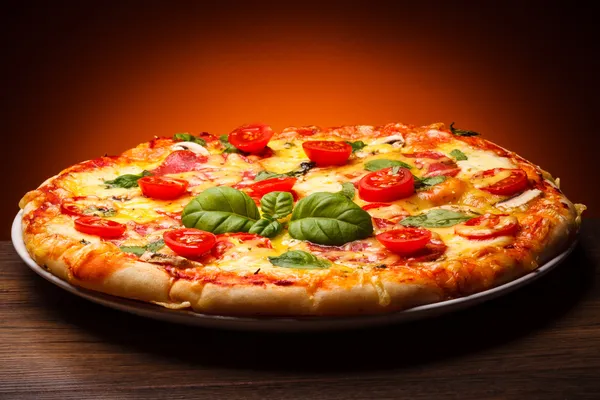
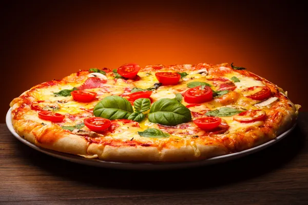

Pizza Margherita or Margherita pizza is a typical Neapolitan pizza, roundish in shape with a raised edge (the
cornicione) and garnished with hand-crushed peeled tomatoes, mozzarella (buffalo mozzarella or fior di latte), fresh
basil leaves, and extra virgin olive oil.
Pepperoni is a variety of spicy salami made from cured pork and beef seasoned with paprika and chili peppers.
Prior to cooking, pepperoni is characteristically soft, slightly smoky, and bright red. Sliced pepperoni is one of the
most popular pizza toppings in American pizzerias.
Traditionally made pepperonis curl into "cups" in the pizza oven's intense heat; commercialization of the production of
pepperoni created slices that would lie flat on the pizza. The curled "cup and char" style of pepperoni remained popular
in pockets of the Midwest.